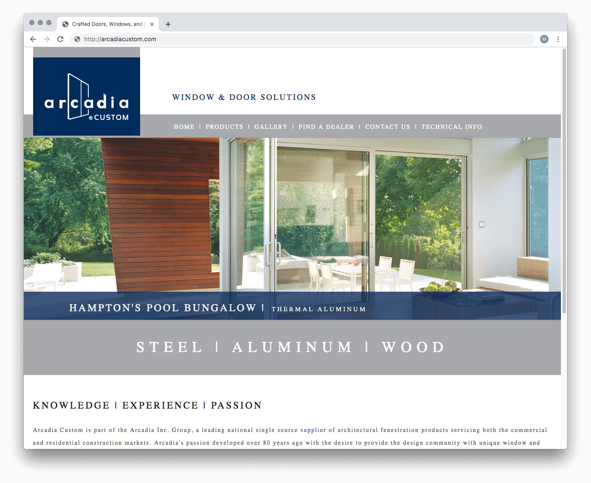
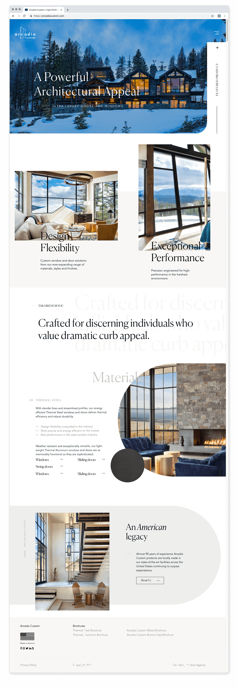
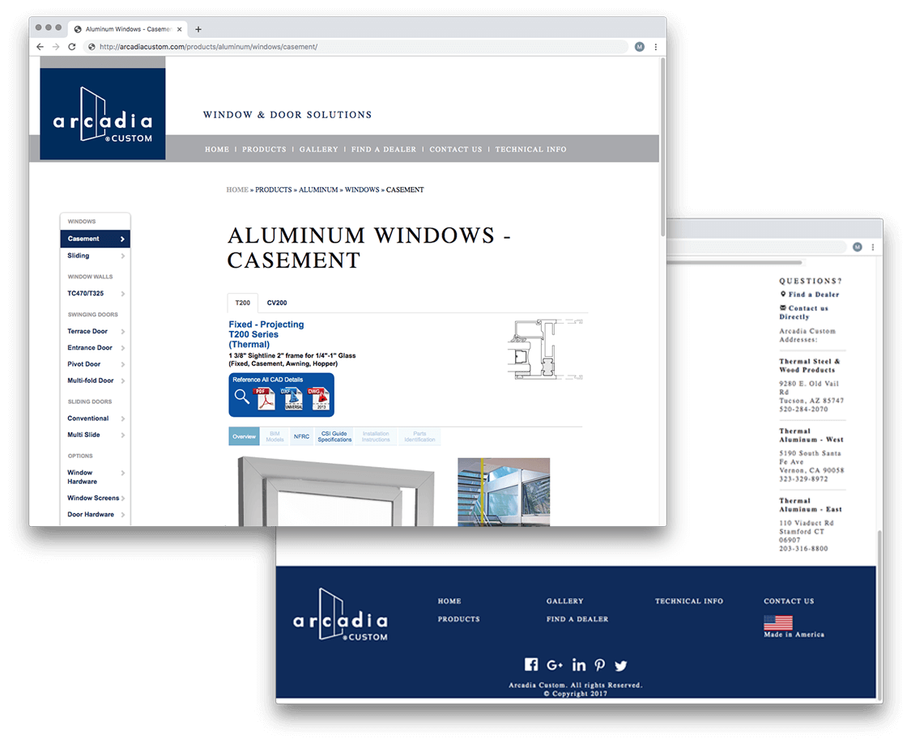
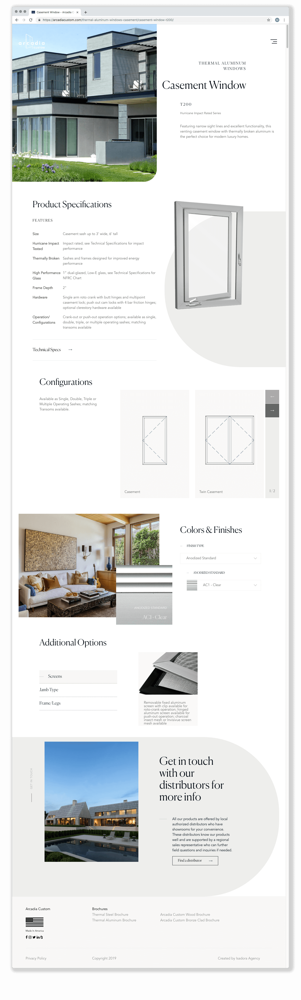
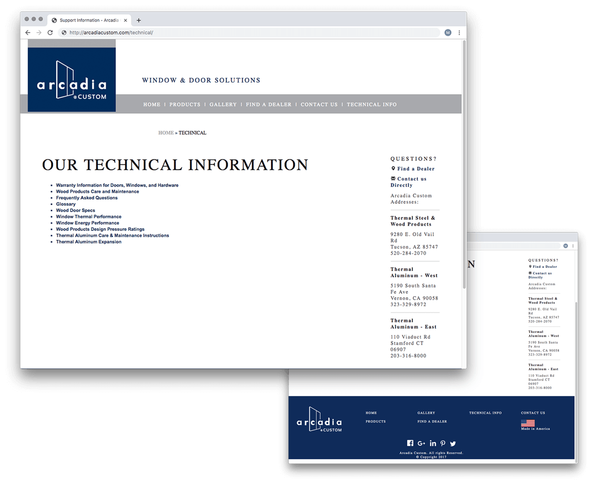
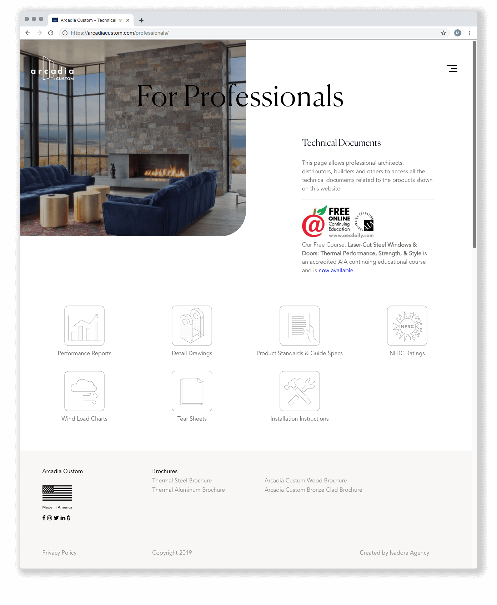

Arcadia Custom’s trustworthy 90-year legacy of producing luxury custom windows and doors wasn’t being showcased well by their outdated website. We overhauled the site to funnel visitors quickly to product information, decluttering content pages in the process, and leveraged the Arcadia Custom brand reputation to help instill trust among scores of new and returning architects and homeowners.
Homepage
Before our partnership, Arcadia Custom’s website primarily featured photographs of completed projects. This made it great for window-shopping (literally!), but offered very little in terms of credibility to new users. We shifted the site’s visuals and content to highlight Arcadia’s strongest differentiators, pairing beautiful photographs with elegant animation and contextual information to accentuate luxurious product offerings.
Before

After

Product Pages
As a pioneering manufacturer of the residential sliding glass door, Arcadia Custom has plenty of innovative solutions under its belt. Their previous product pages were function-forward, meant to serve architects and contracting professionals, and lacked very much plain-language information. Our revamped product pages balance all users’ needs, with easily accessible technical specifications as well as beautiful brochure photography to help homeowners imagine these products as part of their lives.
Before

After

Technical Information
Contractors and architects who are seeking detailed technical information make up a large portion of Arcadia Custom’s traffic. In addition to contextualizing this documentation among product pages, we prepared a gated-access page for qualified professionals to download documents they need as they work on construction projects. As a bonus, Arcadia is now able to collect user contact information for future targeted marketing.
Before

After

Our work with Arcadia Custom helped them realize an important vision. Now the sophisticated web presence fully represents the high-quality consultation and products they provide to homeowners. In fact, the Arcadia team has been so happy with our partnership that we have signed on to redesign the brand’s corporate website next. Stay tuned!